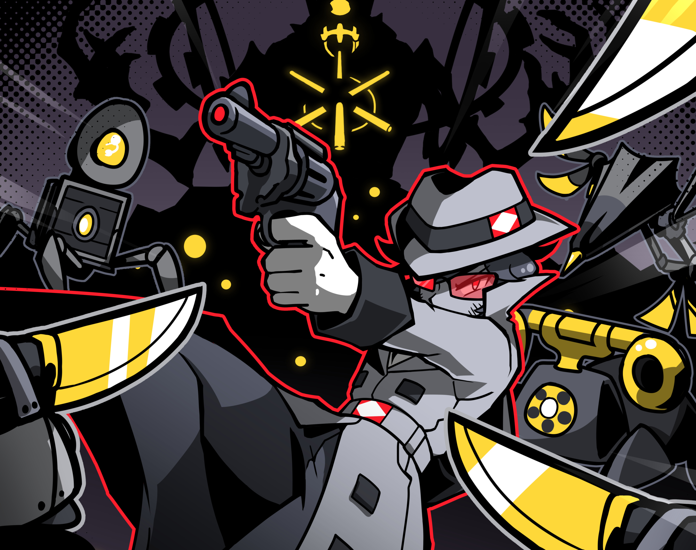
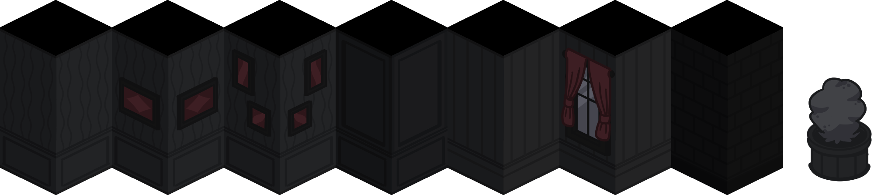
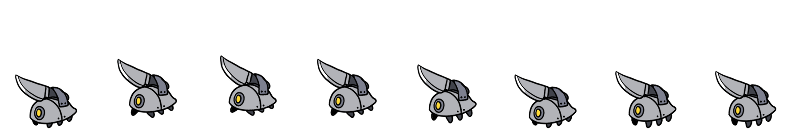

Apr 2023
Apr 2023
The Fixer's job is supposed to be simple. When a job needs a weapon, he goes into the Vault and gets one out. Simple. That was until the Vault started growing. Now the Boss has tasked the Fixer with figuring out why and how to stop it for good.
Fallen is meant to be difficult and played a few times in order to reach an ending. There are four endings in total.
Awarded the INT D 450 Award for Best Gameplay

Awarded the INT D 450 Award for Best Gameplay
Godot
Clip Studio Paint
Trailer
Details
Within the Vault was made for the "INT D 450 - Computer and Games" class at the University of Alberta. Over the course of a 4-month semester, we were tasked
to develop a game, using an engine of our choice, in a team of our choosing.
I primarily worked on the art and design for the UI and overworld of the game. I also designed most of the enemies you encounter through the game, and created VFX as well as a few animations.
The UI and general style of the game was greatly inspired by Helltaker and Persona 5. I used a monochrome aesthetic, punctuated with bright red and yellow, to create the atmosphere of a noir film while highlighting the important aspects of the game; the player, as well as other good things such as health, are represented in red, whereas enemies and danger are represented with yellow.


I primarily worked on the art and design for the UI and overworld of the game. I also designed most of the enemies you encounter through the game, and created VFX as well as a few animations.
The UI and general style of the game was greatly inspired by Helltaker and Persona 5. I used a monochrome aesthetic, punctuated with bright red and yellow, to create the atmosphere of a noir film while highlighting the important aspects of the game; the player, as well as other good things such as health, are represented in red, whereas enemies and danger are represented with yellow.